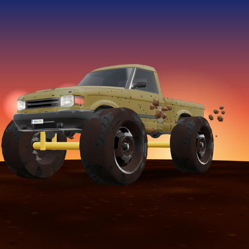
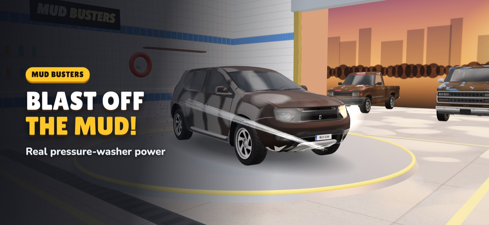
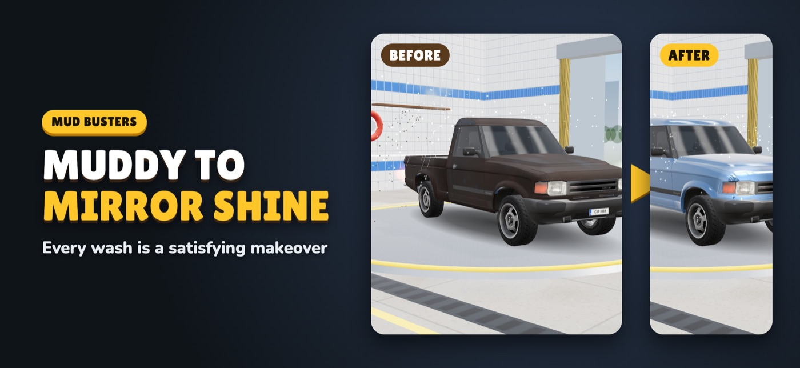
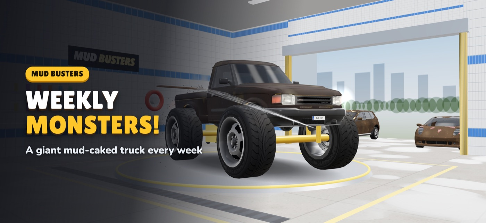

A 3D car-wash game for everyone from 5 to 55.
Blast the mud off real 3D cars, foam them up, rinse and polish until they sparkle. Collect every car you restore, take on a daily challenge and a weekly monster truck, and build your dream garage, garage pup included.



Car models by Daniel Zhabotinsky (Sketchfab), CC BY 4.0. © 2026 icod4me.